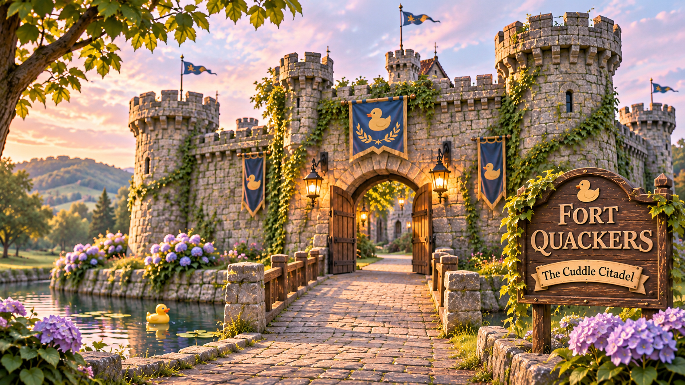

The towers, arrow slits, weathered stone, and ivy remain as reminders of the fortress's disputed military history. Official records mention hostile squirrels, border disagreements, and one spectacular turnip-related misunderstanding.
The restored drawbridge now welcomes visitors, provided the Navy Squeals complete their screening before Quackers spots somebody waving.
Please respect the masonry. Cushions for comfortable waving are provided where appropriate.